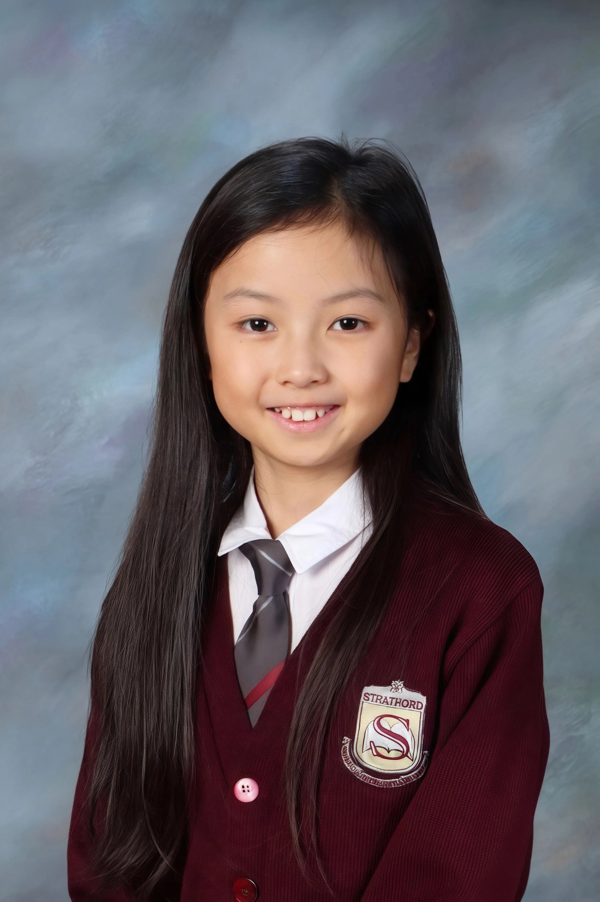

Young Writer
Creating magical worlds where friendship conquers all.
Adora Lin is a young writer who loves creating stories about mystical worlds and fascinating characters. All of her stories are written with care and hope that they lighten up your day!

About the Author
Adora Lin is a young writer who loves creating stories about mystical worlds and fascinating characters. All of her stories are written with care and hope that they lighten up your day!
When she's not writing, you can find her drawing art, enjoying time with her sibling, and of course, dreaming up more stories!